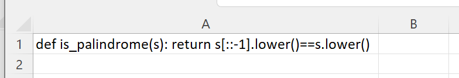
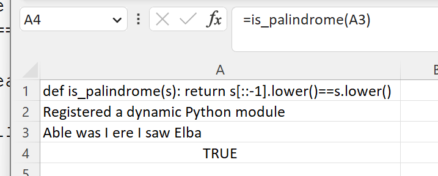
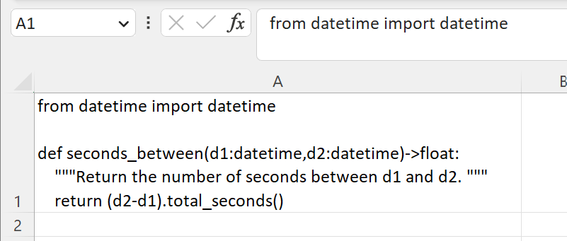
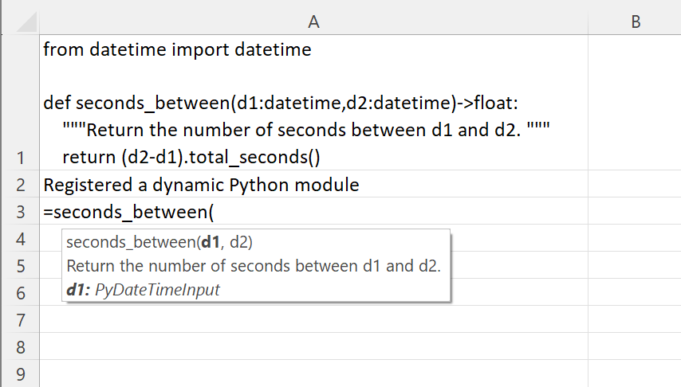

Dynamic Module Importing
xlSlim can create Excel functions directly from Python code in the workbook.
If you would like to use this little function in Excel:
def is_palindrome(s): return s[::-1].lower()==s.lower()
Paste the code into an Excel cell:
{kind=link}
Register a new Excel function with this CreatePyModule() formula:
=CreatePyModule(A1)
{kind=link}
And the new is_palindrome() function is available to use in Excel:
{kind=link}
It is that easy to create Excel functions from Python code snippets!
Perhaps we would like to use this function in Excel:
from datetime import datetime
def seconds_between(d1:datetime,d2:datetime)->float:
"""Return the number of seconds between d1 and d2. """
return (d2-d1).total_seconds()
As before, we paste the text into an Excel cell:
{kind=link}
Note
Alt-Enter can be used in Excel to create a new line in a cell.
And register a new Excel function with this CreatePyModule() formula:
=CreatePyModule(A1)
{kind=link}
And the new seconds_between() function is available to use in Excel:
{kind=link}
Notice how the type hints and doc strings have been processed and used in the Excel function.
Note
All the Python code and Excel files shown are available from github in the xlslim-code-samples repo. I highly recommend downloading the samples from github. The Excel workbooks contain many tips and tricks.